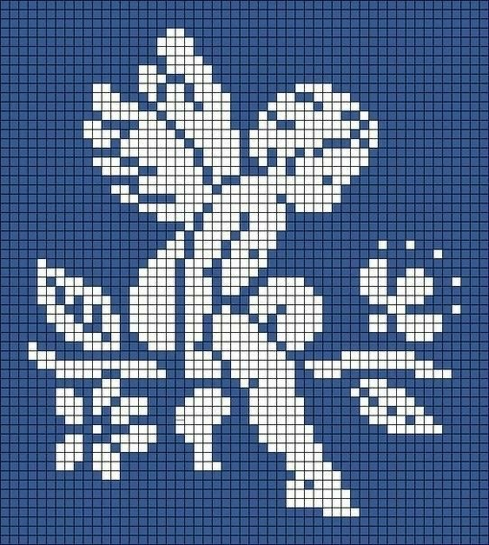

en este sitio van a compilarse info, imágenes y otro contenido multimedia en general de bandas de alt rock. esto incluye prog, math, rock experimental y otros subgéneros. que disfruten.
hace poco me propuse empezar a escuchar más música, variar un poco mi repertorio. así que acá voy a ir compilando bandas interesantes y todo el contenido multimedia que las acompañe, aparte del audio.
acá la lista de las bandas que agregué hasta ahora.